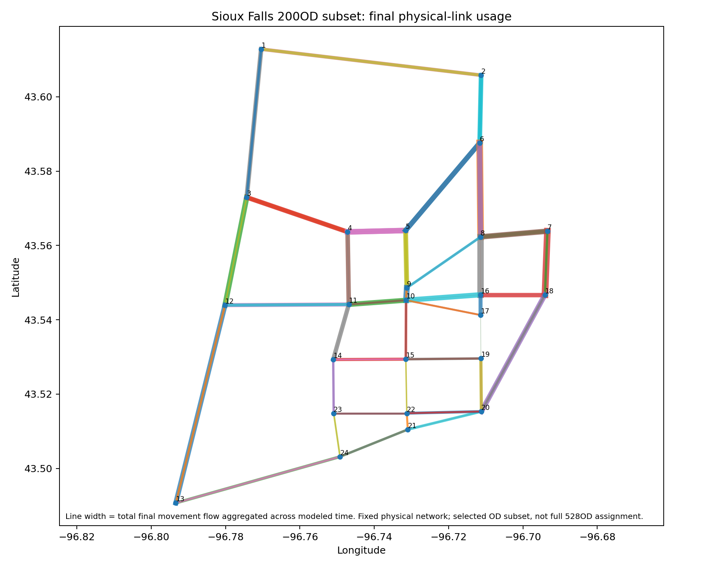
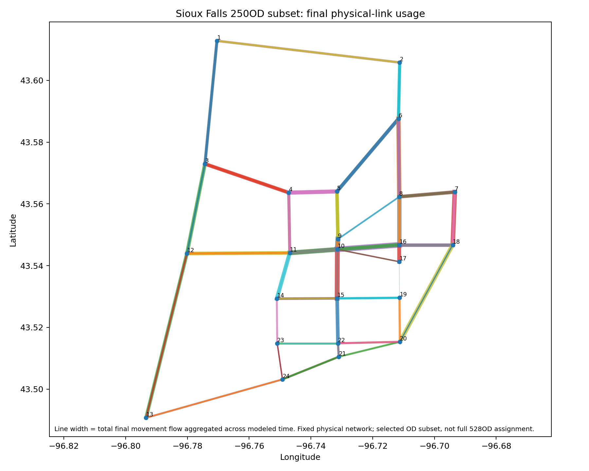
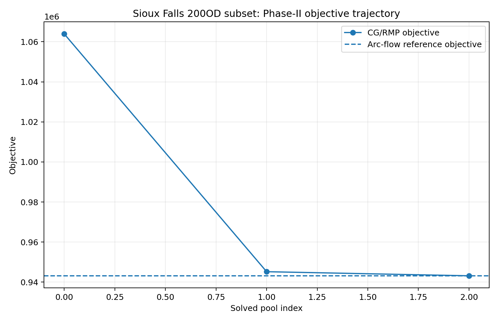
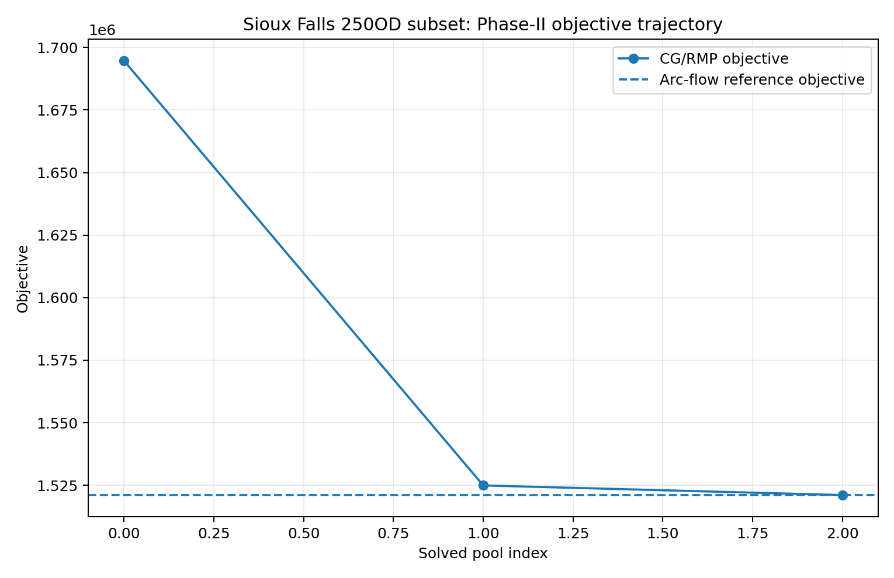
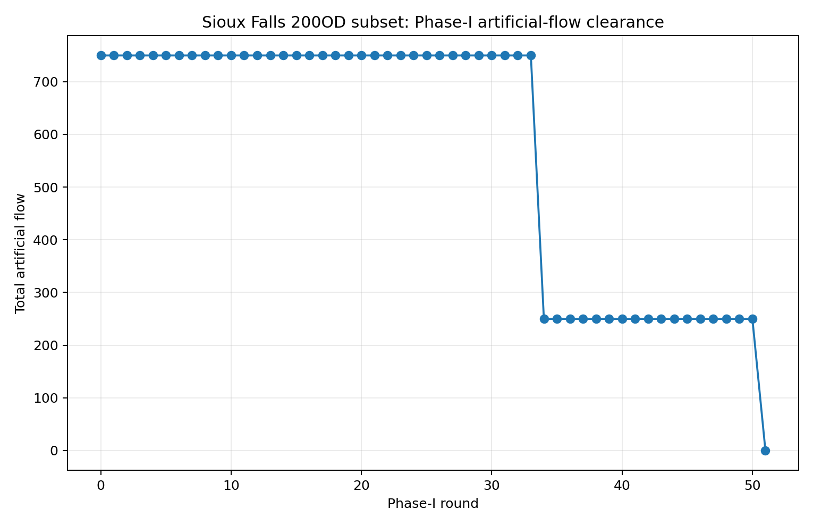
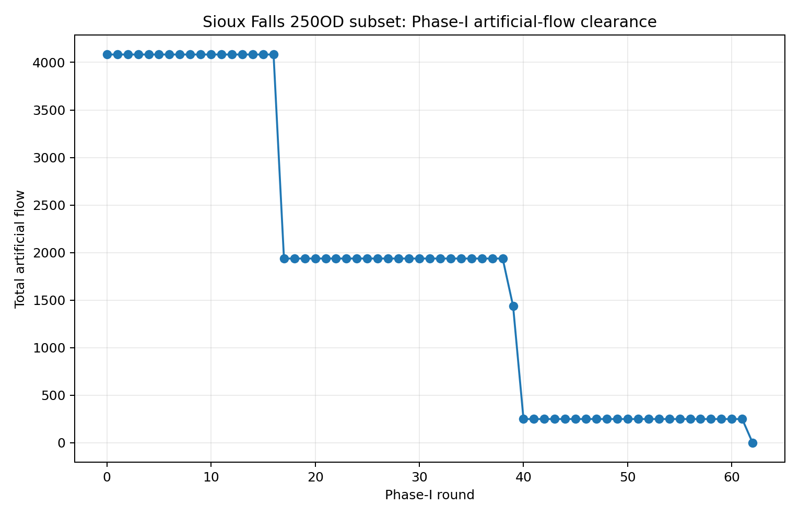

Documentation / Road benchmark visualizations
Road benchmark visualizations
These figures summarize saved, independently checked historical Sioux Falls selected-OD experiments. They are the same approved image assets shipped with the preceding release; this gallery does not rerun optimization or invent new observations.
For the separate real-city example, see the Central Boston five-map gallery: network and zones, the MassGIS residential-area prior, one qualified GPS projection, and saved S1 and S2−S1 fixed-panel flows. Its source credits and units are documented alongside each map.
Physical-link flow views
| 200 OD · 64 selected links | 250 OD · 69 selected links |
|---|---|
 |
 |
Line width encodes final movement flow aggregated across modelled time. These are schematic network views: opposite directions may overlap, and colours are not a quantitative colour scale. Do not read them as observed traffic, static V/C, precise road-shape GIS or a full 528-OD assignment.
Phase-II objective trajectories
| 200 OD | 250 OD |
|---|---|
 |
 |
Each curve is compared with its own same-model arc-flow reference. Different OD selections define different optimization instances; do not interpret the difference between their objective values as an algorithmic improvement.
Phase-I artificial-flow clearance
| 200 OD | 250 OD |
|---|---|
 |
 |
Artificial flow is an algorithmic feasibility device, not an observed queue or discarded trip demand. Its progression belongs to the successful solve and is retained for interpretation.
Data cards and numerical scope
The 200-OD record and 250-OD record explain saved versus uniquely reconstructed final path flows, objective checks and remaining certificate boundaries. Full raw inputs and reconstruction evidence are not redistributed here. The static FW record is a separate approximate static model, not another point on these CG curves.